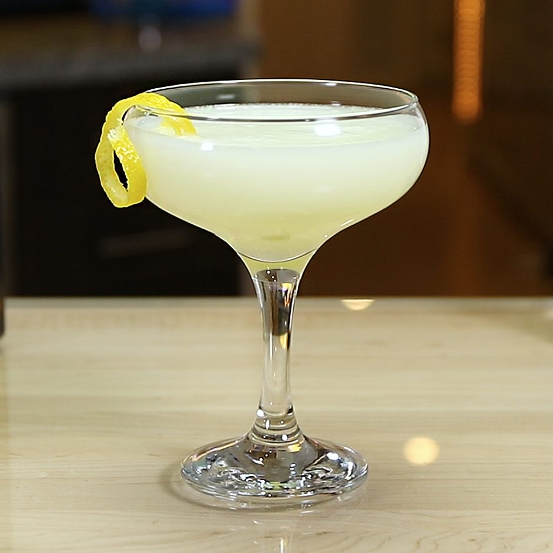

The White Lady

Description
Ingredients
- 45ml London Dry gin
- 20ml Triple Sec
- 20ml lemon juice
- 15ml simple syrup
- 1/2 egg white
Steps
- Add all ingredients into shaker
- Dry shake
- Add ice and shake
- Double strain into chilled coupe
- Garnish with twist of lemon